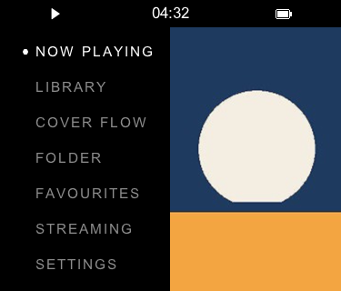
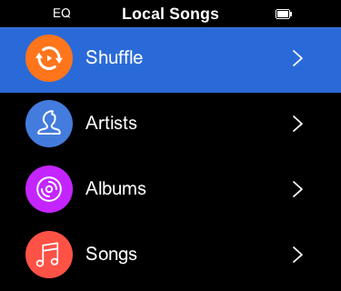
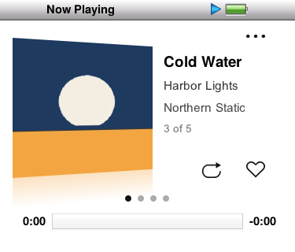
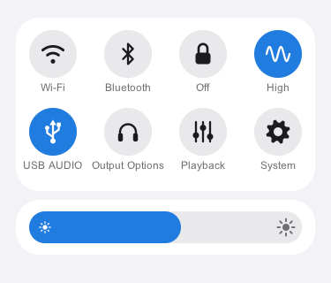

Features
Your Q2, as an iPod.
Q2 Pod replaces the Q2’s menus with an iPod-style interface.
Gapless
FLAC, MP3, AAC, Opus and Ogg Vorbis play without gaps, also through a USB DAC. Crossfade up to 15s.
Cover Flow
Turn the wheel or swipe through your album covers. Sort them by album, artist, year or Most Played.
The wheel
The list moves faster when you turn the wheel faster. Menus remember your position. Hold Return to go to Now Playing.
Equalizer
30-band parametric EQ: 10 for L, 10 for R, 10 for Stereo. Imports AutoEQ and APO presets.
Lyrics and covers
Synced .lrc lyrics show on Now Playing and full screen. The Q2 can download covers and lyrics.
Your library
Search, Era, Most Played, ratings from 0 to 5 hearts, playlists with M3U import and export, and a queue.
Streaming
Streaming services from the App Store, AirPlay from your iPhone, and Internet Radio.
Bluetooth and AirPods
AirPods stem controls, ear detection and bi-directional volume control. Bluetooth and wired output keep their own volume.
Podcasts and audiobooks
Podcasts and .m4b audiobooks continue from where you stopped. Scrobble your listens to Last.fm or ListenBrainz.
Themes
Four handcrafted themes.
Light Mode has an Auto schedule. Night Shift makes the colours warmer at night. Minimal and Modern have accent colours.



App Store
More from the App Store.
In Library → App Store, install, update and remove apps and games through Wi-Fi.
From the community
Apps for your phone and computer that work with Q2 Pod.
Install.
You need a computer and the Q2’s USB-C cable. The User Guide has more data.
- Download
update.tarfrom the latest release. - Connect the Q2 to your computer with the USB-C cable. The card shows as a drive.
- Copy
update.tarto the card’s root, not into a folder. Eject the card, then disconnect the cable. - On the Q2, select System settings → System Update → TF card update. Keep the card in until the Q2 starts again.
Update
- Through Wi-Fi: select System settings → System Update → Network update.
- With a cable: do the install steps again with the newest release.
Go back to Shanling’s firmware
- Install the Shanling firmware with the same steps.
- If the Q2 does not start, copy the
recovery-updatefolder from Shanling’s recovery package to the card. Then hold Previous and push Centre to start the Q2.
Help.
Q2 Pod is an independent project. Shanling does not make or endorse it. You install it at your own risk. iPod is a trademark of Apple Inc.